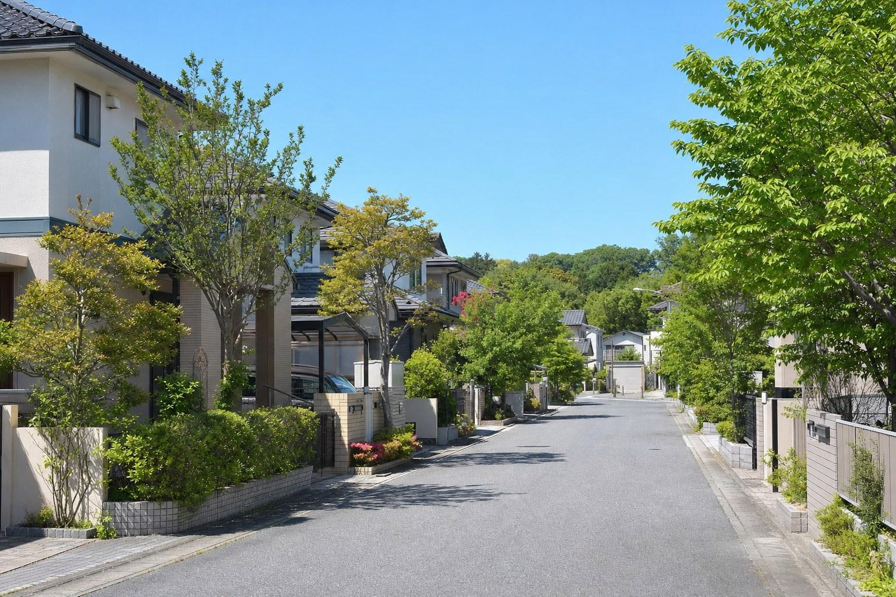

Message価値を知らないまま、
価値を知らないまま、
決断させない。
不動産は同じ場所、同じ広さでも、条件の読み方で選択肢が変わります。売却を急ぐ前に調べる。買う前に将来を考える。管理しながら次の一手を準備する。
KAGOYAは、目の前の取引だけでなく、その後に納得が残る判断を支える会社でありたいと考えています。
代表取締役 内田 豊

KAGOYA / REAL ESTATE CONSULTING
Company profile
会社概要
| 会社名 | 株式会社 籠や |
|---|---|
| 英語表記 | KAGOYA Co., Ltd. |
| 代表取締役 | 内田 豊 |
| 設立 | 令和3年2月1日 |
| 資本金 | 3,000,000円 |
| 所在地 | 〒152-0032 東京都目黒区平町1丁目26-17 ソシアル都立大学駅前201号 |
| 電話番号 | 03-4400-7994 |
| FAX | 03-4400-7995 |
| 営業時間 | 10:00〜18:00（定休日：木曜） |
| 免許番号 | 東京都知事（1）第108542号 |
| 所属団体 | （公社）東京都宅地建物取引業協会 （公社）全国宅地建物取引業保証協会 |
| 事業内容 | 不動産売買・仲介・管理、各種不動産コンサルティング |

Access都立大学駅前から、
東京都目黒区平町1丁目26-17
ソシアル都立大学駅前201号お問い合わせ
都立大学駅前から、
不動産の相談を。
東急東横線「都立大学」駅前エリア。ご来訪前に、電話またはお問い合わせフォームからご連絡ください。
〒152-0032東京都目黒区平町1丁目26-17
ソシアル都立大学駅前201号お問い合わせ